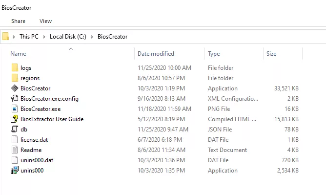

<style>
    .center {
        display: block;
        margin-left: auto;
        margin-right: auto;
        width: 50%;
      }

    a {
      text-decoration: none;
      display: inline-block;
      padding: 8px 16px;
    }
    
    a:hover {
      background-color: #ddd;
      color: black;
    }
    
    .previous {
      background-color: #f1f1f1;
      color: black;
    }
    
    .next {
      background-color: #160042;
      color: white;
    }
    </style>

<section class="support section bg-gray">
	<div class="container">
    <div class="container" style="text-align:justify; margin-bottom:50px;">
      <h4 class="join">Installation</h4>
      <p>Download the latest version of BiosCreator.
        <p>Trial version can be downloaded from <a href="https://bioscreator.com/">www.bioscreator.com</a> and discord server in #software-download channel.</p>
        <p>For registered users, a download link will be sent to you together with an activation link or get the latest bits from <a href="https://discord.gg/g9uhjWqC6r">discord</a> server in #bioscreator-release channel.</p>
        <p>Run the setup wizard and follow the instruction.</p>
        <p>After installation, a shortcut will be available in your start menu. BiosCreator will be installed to the default folder "C:\BiosCreator"</p>
    </div>
    <div class="container" style="text-align:justify; margin-bottom:50px;">
        
    </div>

    <a href="{{ site.baseurl }}/getting-started/requirements" class="previous">&laquo; Previous</a>
    <a href="{{ site.baseurl }}/getting-started/registration" class="next">Next &raquo;</a>

		</div> <!-- End row -->
	</div> <!-- End container -->
</section> <!-- End section -->